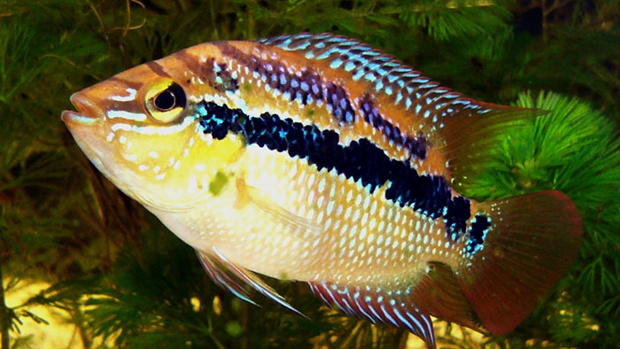
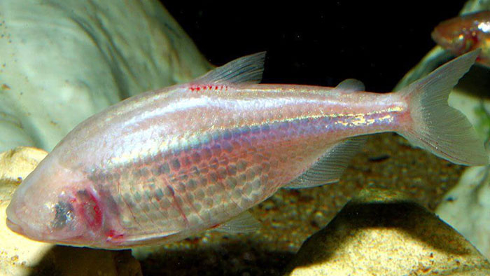
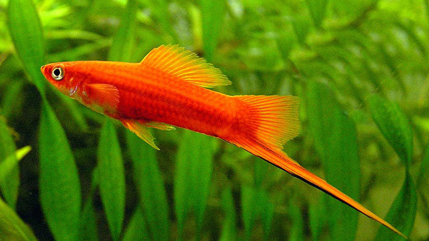
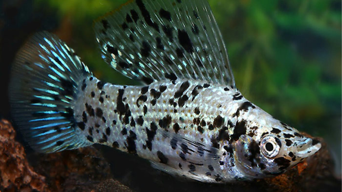
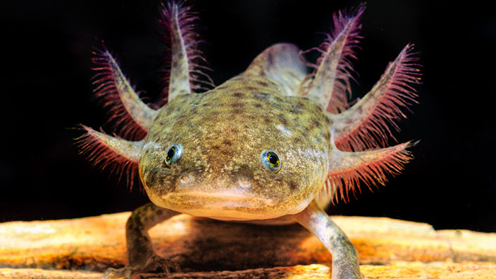
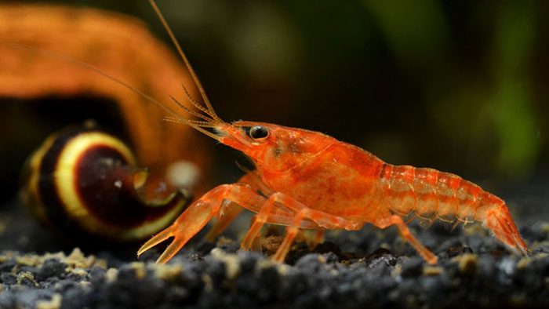

POISSONS

Trichromis salvini
Côte atlantique de l'est du Mexique

Astyanax mexicanus
Grottes de Cueva Chica

Xiphophorus helleri
Sud-est du Mexique

Poecilia sphenops
Sud-est du Mexique
AMPHIBIENS ET CRUSTACÉS

Ambystoma Mexicanum
Lacs Xochimilco et Chalco

Cambarellus patzcuarensis
Lac de Pátzcuaro